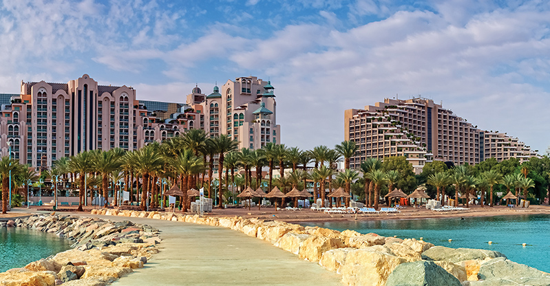
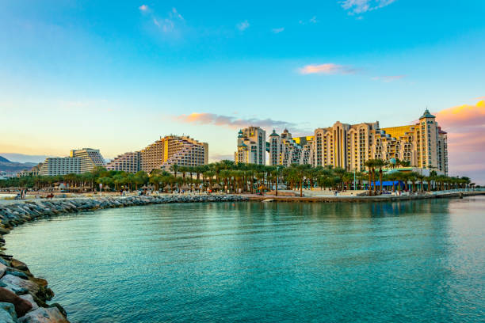

|
 |  |
Eilat is a wonderful, but very busy city. It has several hotels, resorts and all-inclusive, numerous bars, clubs, discos and a few shopping centers to shop with no VAT.
Besides all these amazing places, in Eilat, you and your children will be able to visit a breathtaking coral beach, an outstanding dolphin reef, and a number of places to practice snorkeling and scuba diving with underwater views you will never forget.
If you are going to Eilat in the middle of the summer, be ready for an average temperature of 37ºC. It is always hot in Eilat and because of the lack of rain, it has a very dry environment where until you get used to it, it can feel hard to catch your own breath. During the winter and during the day, the temperatures can go down to around 23ºC, but it is hard for it to go even lower. At night, however, since it is located in the middle of the desert, temperatures can go down, so we recommend you carry a light jacket with you.
To get more informatiom about nightlife in eilat - click here